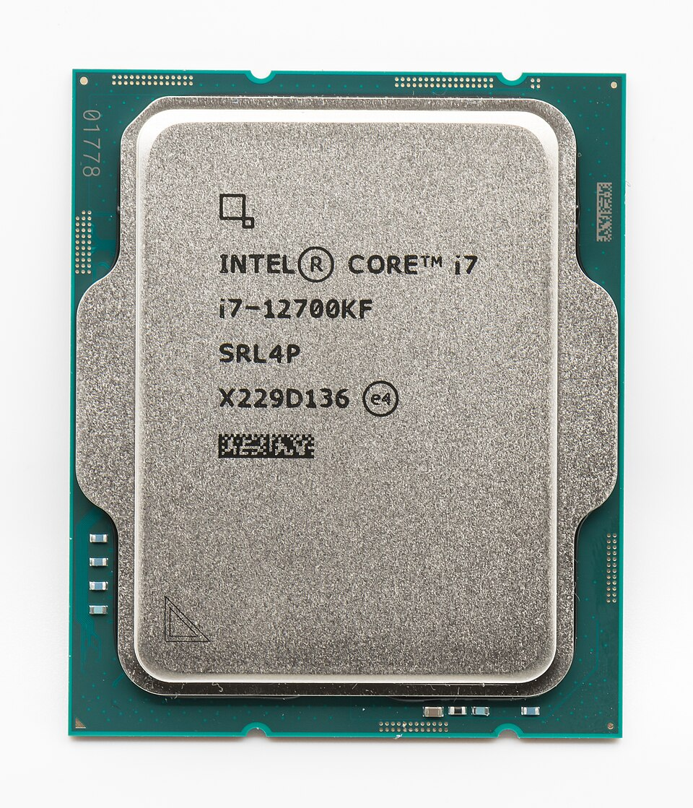

Procesador: El Cerebro del Equipo
Módulo educativo para la infraestructura del computador de desarrollo

¿Qué es?
La Unidad Central de Procesamiento (CPU) es el componente de hardware más crítico de la computadora. Funciona como el cerebro de la máquina, ejecutando el código de los programas al interpretar y procesar millones de instrucciones matemáticas y lógicas por segundo.
Función Principal
El procesador ejecuta el ciclo de instrucción: búsqueda (fetch), decodificación (decode) y ejecución (execute). Mediante sus núcleos físicos e hilos lógicos, puede procesar múltiples tareas de forma paralela, administrando la carga de trabajo del sistema operativo.
Importancia para la Programación
Para un desarrollador de software, el procesador impacta directamente en la velocidad con la que se compila el código fuente (C++, Java, Rust), la rapidez en la transpilación de proyectos Web (Node.js, Webpack) y la agilidad para desplegar contenedores Docker y servidores de prueba locales.
Recomendación para Estudiantes ADSO
Priorizar un procesador con un mínimo de 6 núcleos físicos y 12 hilos de procesamiento (como AMD Ryzen 5 5600G / 7600 o Intel Core i5-12400 / 13400). Un procesador multinúcleo moderno asegura la fluidez al trabajar en entornos de desarrollo pesados como Android Studio o Visual Studio Enterprise.
¿Sabías que...?
Los procesadores actuales contienen miles de millones de transistores microscópicos construidos en escalas de apenas 4 a 7 nanómetros. ¡En la superficie de una moneda pequeña se integran más circuitos que los existentes en ciudades enteras!